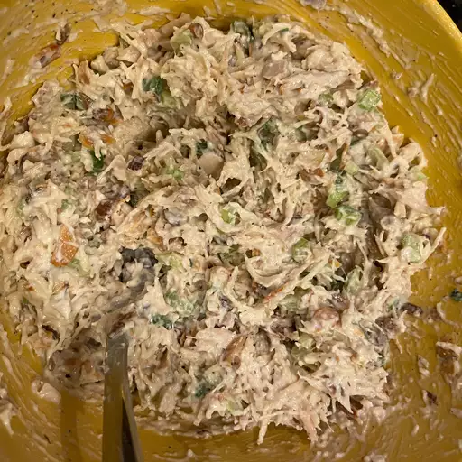

Chicken Salad

Description
This basic chicken salad is the best and a family favorite. I like to use baked thighs or breasts that have been sprinkled with basil or rosemary.
Ingredients
- ½ cup blanched slivered almonds
- ½ cup mayonnaise
- 1 tablespoon lemon juice
- ¼ teaspoon ground black pepper
- 2 cups chopped, cooked chicken meat
- 1 stalk celery, chopped
Steps
- almonds in a frying pan. Toast over medium-high heat, shaking frequently. Watch carefully, as they burn easily.
- Mix together mayonnaise, lemon juice, and pepper in a medium bowl. Toss with chicken, toasted almonds, and celery.